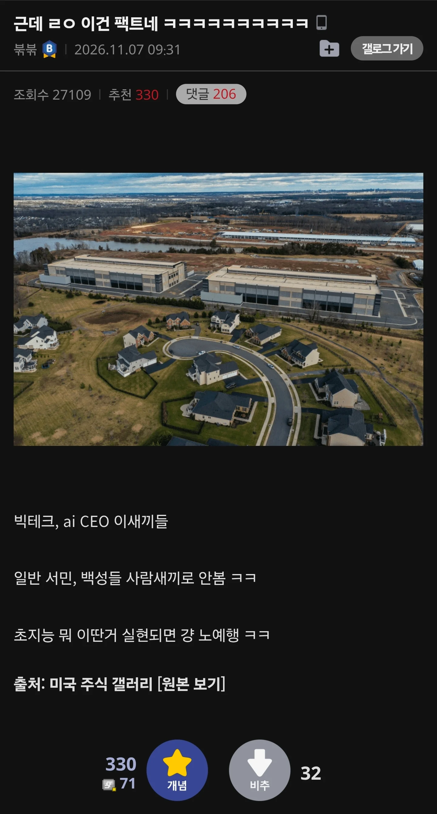

아니 게이머들이 컴퓨터 시장을 이만큼 더 끌어왔고 니들이 후발주자라고ㅋㅋ
어딜 씨발 게임 만드는 도구 새끼들이 주인을 물어

아니 게이머들이 컴퓨터 시장을 이만큼 더 끌어왔고 니들이 후발주자라고ㅋㅋ
어딜 씨발 게임 만드는 도구 새끼들이 주인을 물어
??? : 니들을 대체할 완벽한 노예가 있는데 니들을 왜 살려둬야 하냐고요 ㅋㅋ
ㄹㅇ 어떻게 도구새끼들이 주인(돈도 없고 힘도 없고 기술도 없음)을 물려고 하지? ㅋㅋㅋ
램값을 더 올릴 수 있음
자아 비대증 ㅋㅋ
이딴 말이.늘어나니... ai 버블 스캠이 나오네.. ㅈ댓다
그생각이랑 정확히 반대로가드라
이런걸로 떨구고 어느순간 매수세 들어온다 ㅋㅋㅋ
땅도 넓은새끼들이 너무하노
ㅋㅋㅋ 나중에 그말이 아니라고 둘러대는 것까지 찐 그 자체
근데 어쩌다가 저렇게 가까운곳에 짓게된건지 이해가안간다
저러다 진짜 총질하면어칼라그럼 혁명 마려울것같은데
인간이 도시와 건물을 지을때 그 지역 개미집들을 고려해가면서 개발하지 않는 것과 같다더만